DC chamfer / groove follow-up — slice evidence
Static CPU renders. Slice panels draw the dense field contour (ground truth) under the mesh slice; shading is absent so a defect cannot hide behind it. Core rectangle = the window the distance metrics use.
■ DC baseline (cell*0.5 normals) ■ DC candidate (0.1*cell bounded) ■ marching cubes ■ surface nets ■ dense field contour (ground truth) ▢ core metric window
chamfer-groove @ 20 mm
seam — field contour vs mesh slice
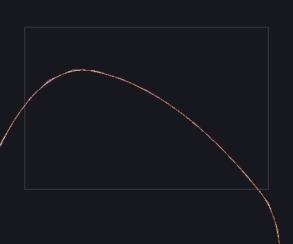
compare (MC+old+new)
notch-plus-z — field contour vs mesh slice
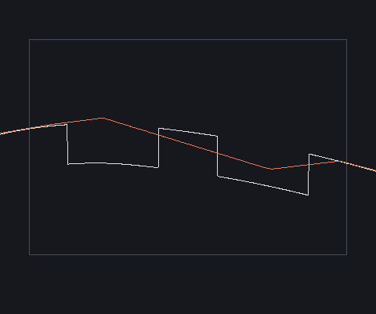
compare (MC+old+new)
notch-minus-z — field contour vs mesh slice
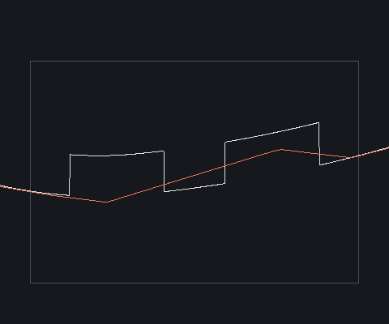
compare (MC+old+new)
chamfer-groove @ 10 mm
seam — field contour vs mesh slice
compare (MC+old+new)
notch-plus-z — field contour vs mesh slice
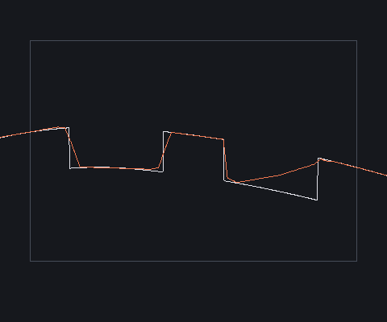
compare (MC+old+new)
notch-minus-z — field contour vs mesh slice
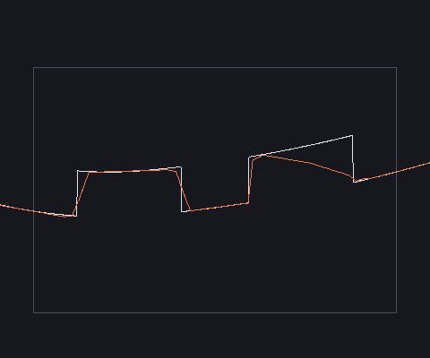
compare (MC+old+new)
chamfer-groove @ 5 mm
seam — field contour vs mesh slice
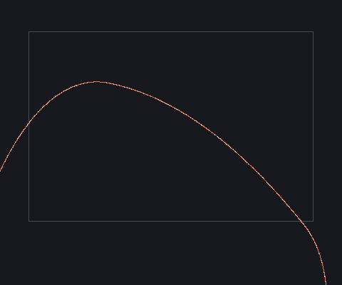
compare (MC+old+new)
notch-plus-z — field contour vs mesh slice
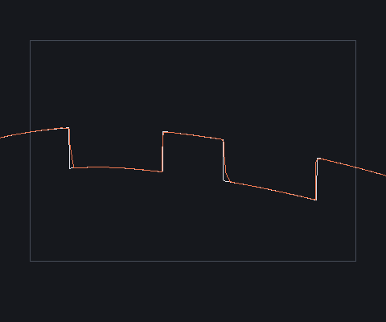
compare (MC+old+new)
notch-minus-z — field contour vs mesh slice
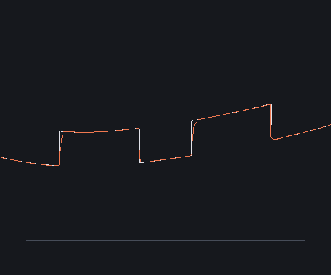
compare (MC+old+new)
tight 3-D closeups @ 10 mm (shaded + wireframe)
closeup-notch
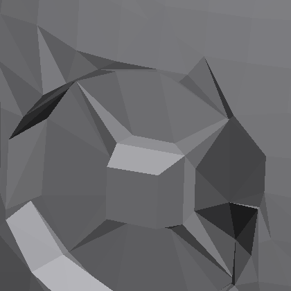
dc-baseline 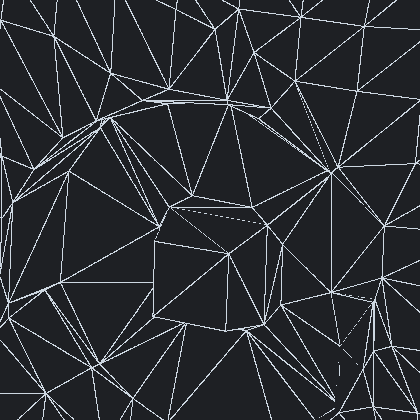
dc-baseline wire 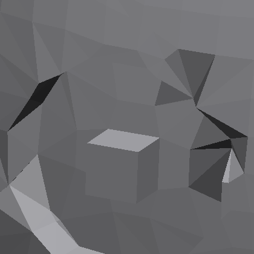
dc-eps-candidate 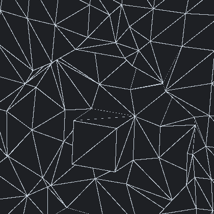
dc-eps-candidate wire 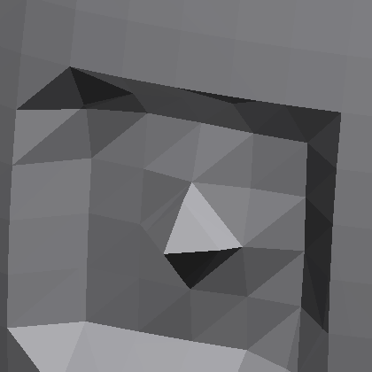
marching-cubes 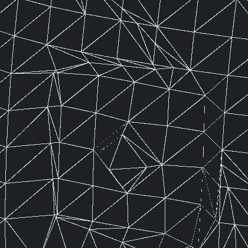
marching-cubes wire
closeup-seam
dc-baseline 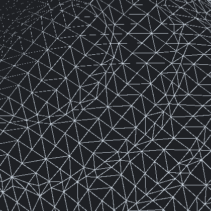
dc-baseline wire dc-eps-candidate dc-eps-candidate wire marching-cubes 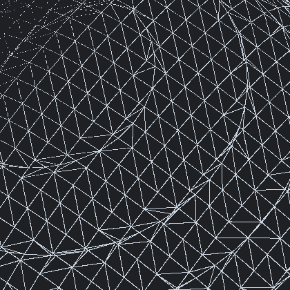
marching-cubes wire
calibration @ 10 mm: sharp box corner
dc-baseline dc-eps-candidate 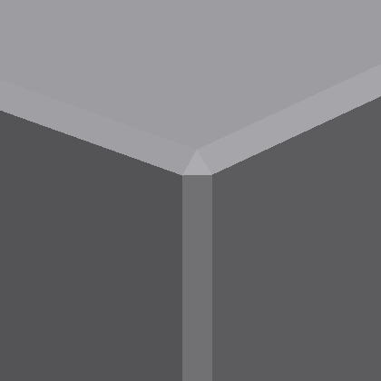
marching-cubes